ultra_844x390
Strukturell kontroll: 153/153. Visuell vurdering gjøres separat. Stillstandsfixturer er plassert etter den uavbrutte turen.
Samlet oversikt | Originalmanifest | Originalt galleri | Pakkekontroll
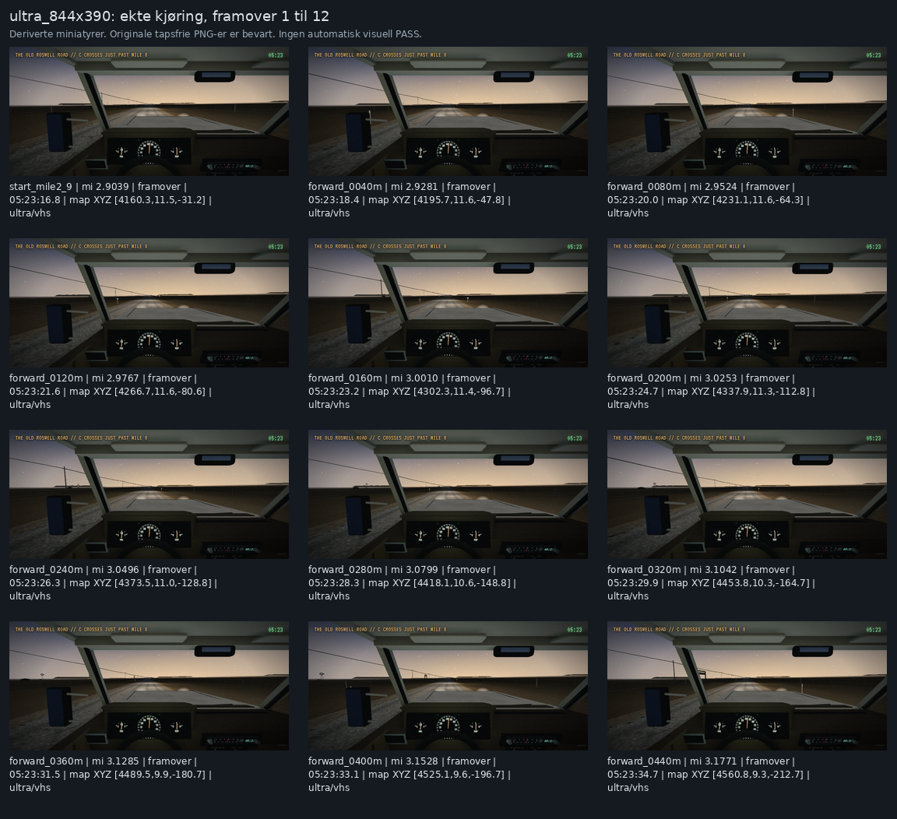
contact_sheet | 1152×1052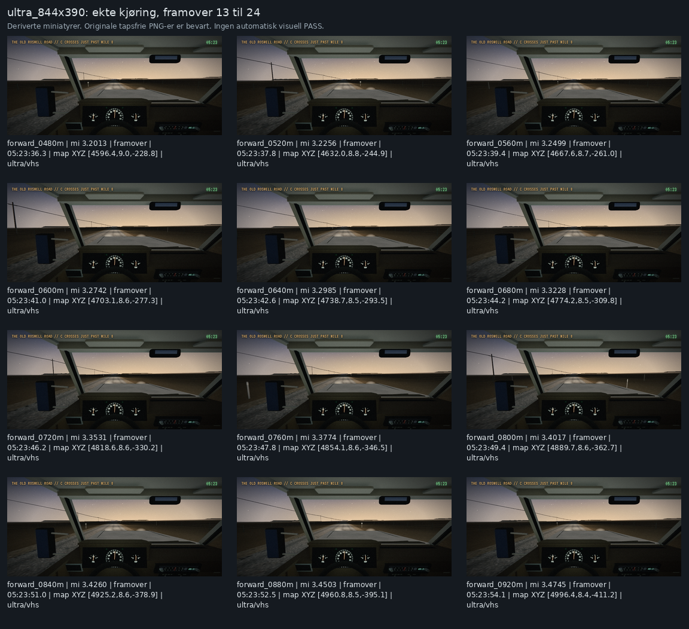
contact_sheet | 1152×1052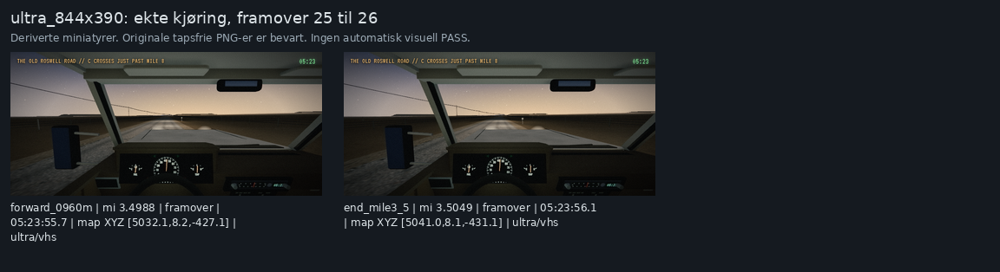
contact_sheet | 1152×314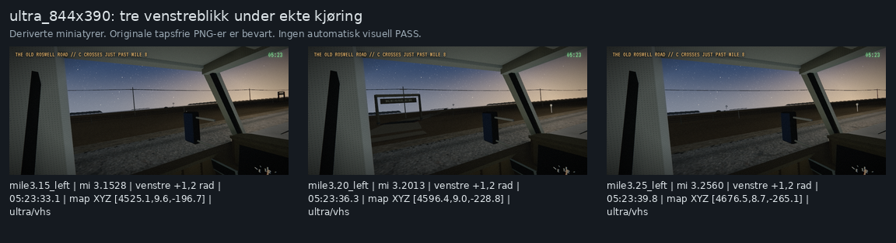
contact_sheet | 1152×314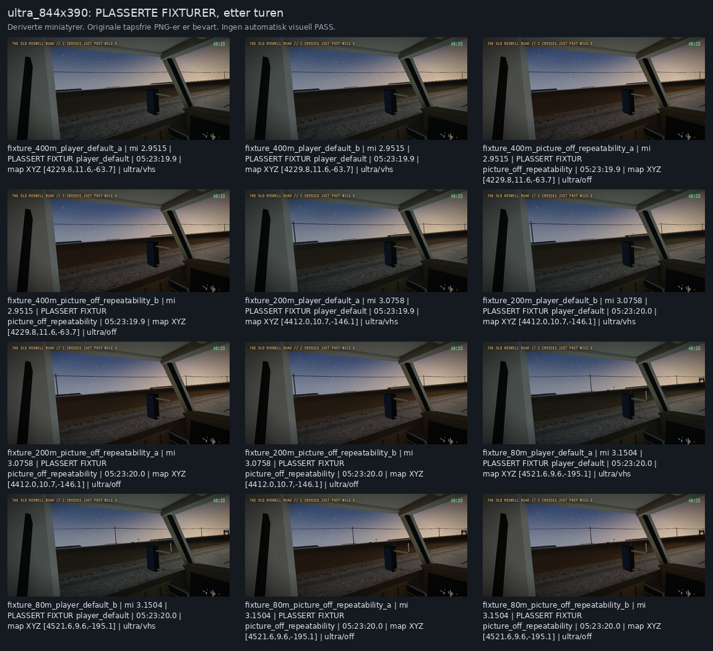
contact_sheet | 1152×1052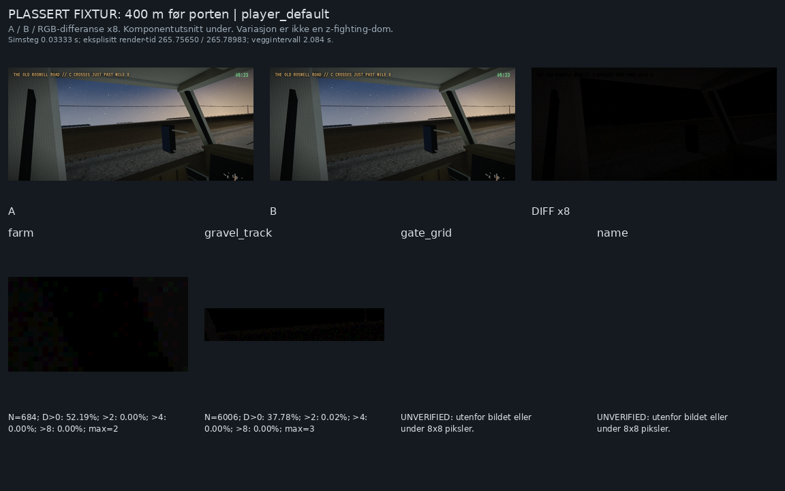
fixture_pair_component_differences | 1152×720 | Rå RGB-differanse, uten forsterkning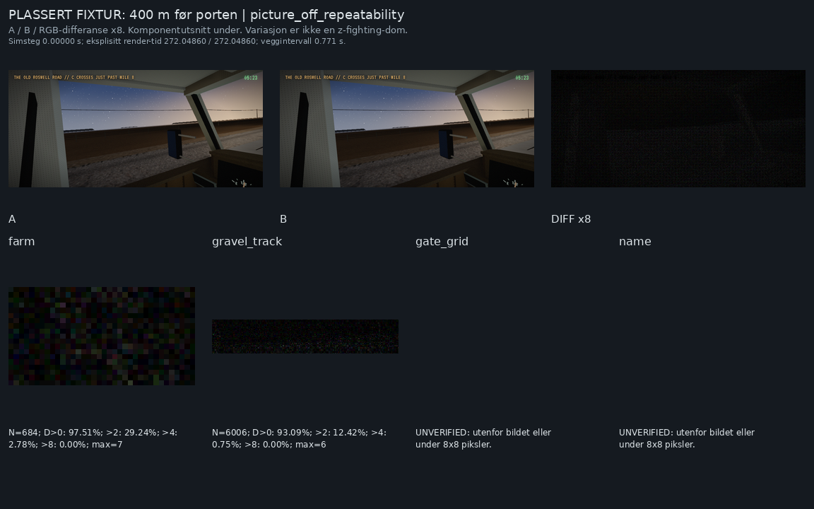
fixture_pair_component_differences | 1152×720 | Rå RGB-differanse, uten forsterkning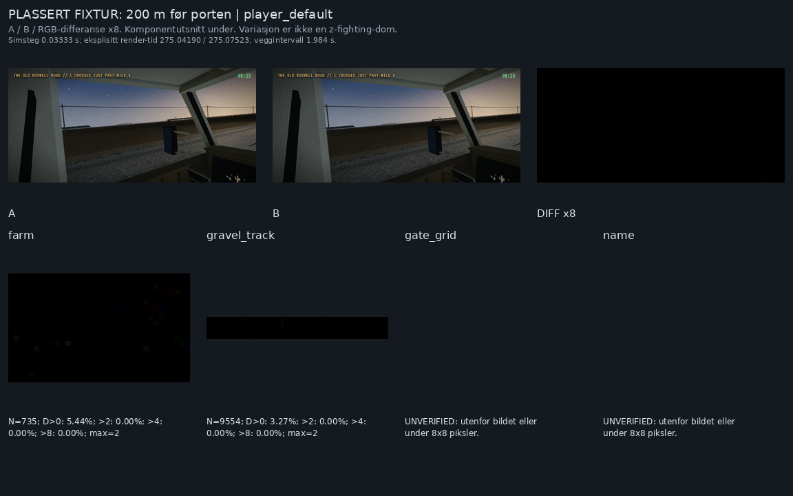
fixture_pair_component_differences | 1152×720 | Rå RGB-differanse, uten forsterkning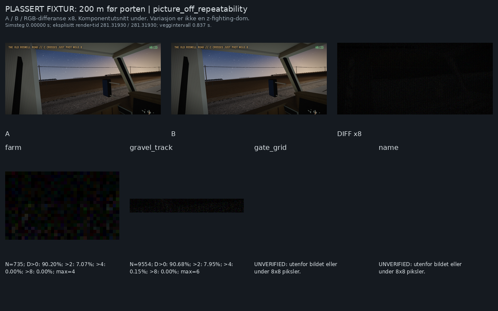
fixture_pair_component_differences | 1152×720 | Rå RGB-differanse, uten forsterkning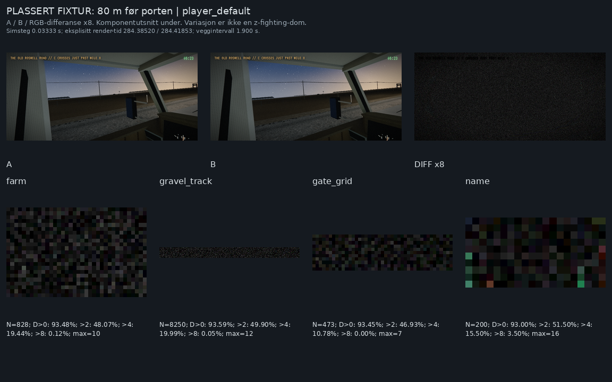
fixture_pair_component_differences | 1152×720 | Rå RGB-differanse, uten forsterkning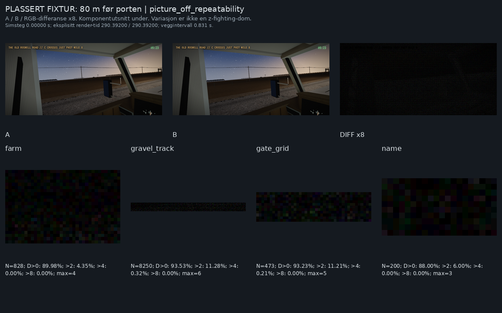
fixture_pair_component_differences | 1152×720 | Rå RGB-differanse, uten forsterkningOriginalbilder fra ekte kjøring
start_mile2_9 | mi 2.9039 | framover | 05:23:16.8 | map XYZ [4160.3,11.5,-31.2] | ultra/vhsforward_0040m | mi 2.9281 | framover | 05:23:18.4 | map XYZ [4195.7,11.6,-47.8] | ultra/vhsforward_0080m | mi 2.9524 | framover | 05:23:20.0 | map XYZ [4231.1,11.6,-64.3] | ultra/vhsforward_0120m | mi 2.9767 | framover | 05:23:21.6 | map XYZ [4266.7,11.6,-80.6] | ultra/vhsforward_0160m | mi 3.0010 | framover | 05:23:23.2 | map XYZ [4302.3,11.4,-96.7] | ultra/vhsforward_0200m | mi 3.0253 | framover | 05:23:24.7 | map XYZ [4337.9,11.3,-112.8] | ultra/vhsforward_0240m | mi 3.0496 | framover | 05:23:26.3 | map XYZ [4373.5,11.0,-128.8] | ultra/vhs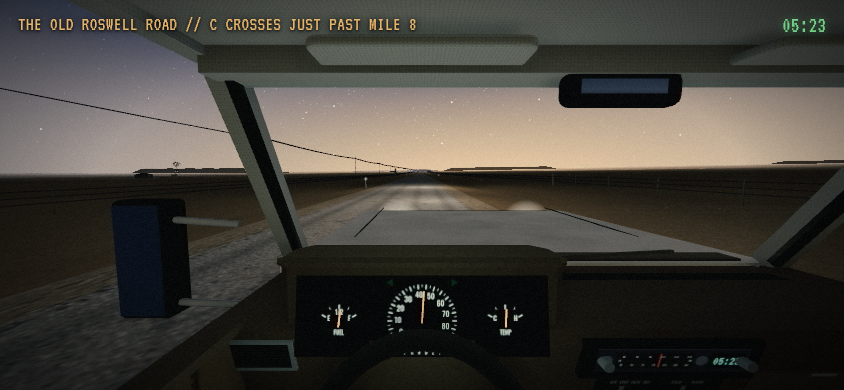
forward_0280m | mi 3.0799 | framover | 05:23:28.3 | map XYZ [4418.1,10.6,-148.8] | ultra/vhs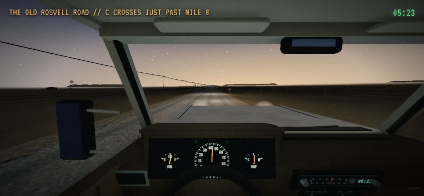
forward_0320m | mi 3.1042 | framover | 05:23:29.9 | map XYZ [4453.8,10.3,-164.7] | ultra/vhsforward_0360m | mi 3.1285 | framover | 05:23:31.5 | map XYZ [4489.5,9.9,-180.7] | ultra/vhsforward_0400m | mi 3.1528 | framover | 05:23:33.1 | map XYZ [4525.1,9.6,-196.7] | ultra/vhs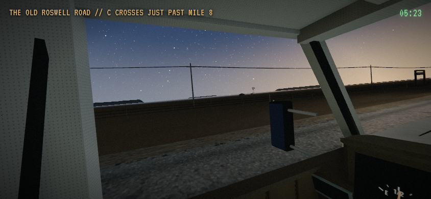
mile3.15_left | mi 3.1528 | venstre +1,2 rad | 05:23:33.1 | map XYZ [4525.1,9.6,-196.7] | ultra/vhsforward_0440m | mi 3.1771 | framover | 05:23:34.7 | map XYZ [4560.8,9.3,-212.7] | ultra/vhs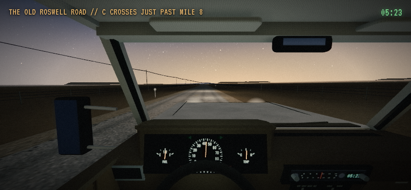
forward_0480m | mi 3.2013 | framover | 05:23:36.3 | map XYZ [4596.4,9.0,-228.8] | ultra/vhs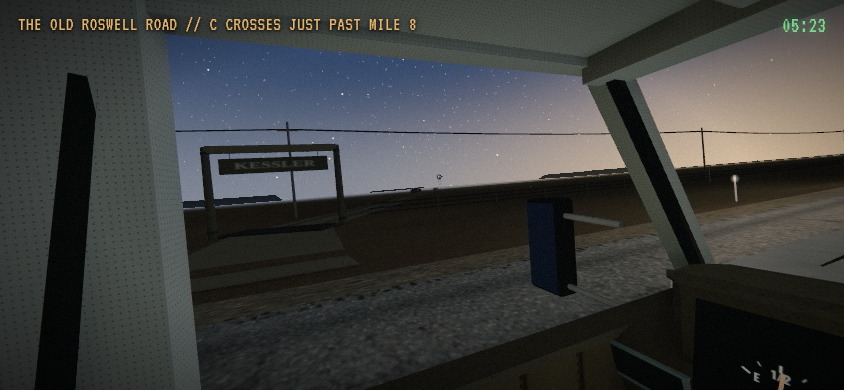
mile3.20_left | mi 3.2013 | venstre +1,2 rad | 05:23:36.3 | map XYZ [4596.4,9.0,-228.8] | ultra/vhsforward_0520m | mi 3.2256 | framover | 05:23:37.8 | map XYZ [4632.0,8.8,-244.9] | ultra/vhsforward_0560m | mi 3.2499 | framover | 05:23:39.4 | map XYZ [4667.6,8.7,-261.0] | ultra/vhsmile3.25_left | mi 3.2560 | venstre +1,2 rad | 05:23:39.8 | map XYZ [4676.5,8.7,-265.1] | ultra/vhsforward_0600m | mi 3.2742 | framover | 05:23:41.0 | map XYZ [4703.1,8.6,-277.3] | ultra/vhsforward_0640m | mi 3.2985 | framover | 05:23:42.6 | map XYZ [4738.7,8.5,-293.5] | ultra/vhsforward_0680m | mi 3.3228 | framover | 05:23:44.2 | map XYZ [4774.2,8.5,-309.8] | ultra/vhsforward_0720m | mi 3.3531 | framover | 05:23:46.2 | map XYZ [4818.6,8.6,-330.2] | ultra/vhsforward_0760m | mi 3.3774 | framover | 05:23:47.8 | map XYZ [4854.1,8.6,-346.5] | ultra/vhsforward_0800m | mi 3.4017 | framover | 05:23:49.4 | map XYZ [4889.7,8.6,-362.7] | ultra/vhsforward_0840m | mi 3.4260 | framover | 05:23:51.0 | map XYZ [4925.2,8.6,-378.9] | ultra/vhsforward_0880m | mi 3.4503 | framover | 05:23:52.5 | map XYZ [4960.8,8.5,-395.1] | ultra/vhsforward_0920m | mi 3.4745 | framover | 05:23:54.1 | map XYZ [4996.4,8.4,-411.2] | ultra/vhsforward_0960m | mi 3.4988 | framover | 05:23:55.7 | map XYZ [5032.1,8.2,-427.1] | ultra/vhsend_mile3_5 | mi 3.5049 | framover | 05:23:56.1 | map XYZ [5041.0,8.1,-431.1] | ultra/vhsPlasserte stillstandsfixturer
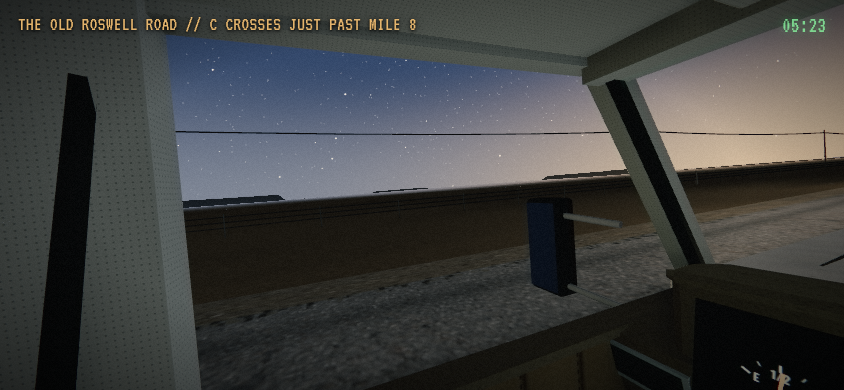
fixture_400m_player_default_a | mi 2.9515 | PLASSERT FIXTUR player_default | 05:23:19.9 | map XYZ [4229.8,11.6,-63.7] | ultra/vhsfixture_400m_player_default_b | mi 2.9515 | PLASSERT FIXTUR player_default | 05:23:19.9 | map XYZ [4229.8,11.6,-63.7] | ultra/vhs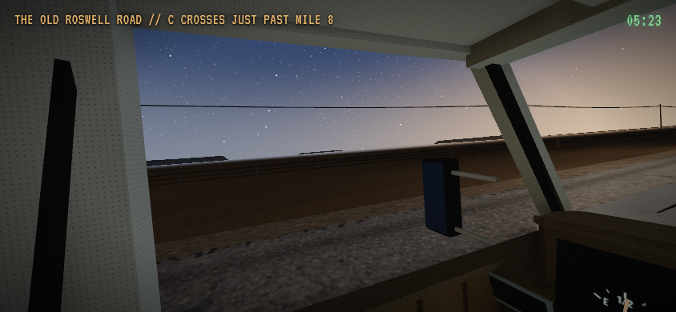
fixture_400m_picture_off_repeatability_a | mi 2.9515 | PLASSERT FIXTUR picture_off_repeatability | 05:23:19.9 | map XYZ [4229.8,11.6,-63.7] | ultra/offfixture_400m_picture_off_repeatability_b | mi 2.9515 | PLASSERT FIXTUR picture_off_repeatability | 05:23:19.9 | map XYZ [4229.8,11.6,-63.7] | ultra/off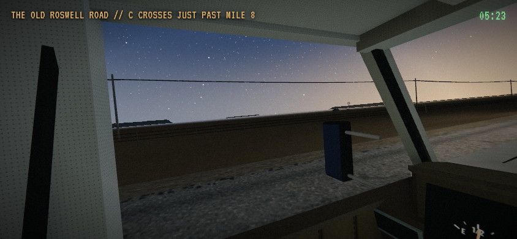
fixture_200m_player_default_a | mi 3.0758 | PLASSERT FIXTUR player_default | 05:23:19.9 | map XYZ [4412.0,10.7,-146.1] | ultra/vhsfixture_200m_player_default_b | mi 3.0758 | PLASSERT FIXTUR player_default | 05:23:20.0 | map XYZ [4412.0,10.7,-146.1] | ultra/vhsfixture_200m_picture_off_repeatability_a | mi 3.0758 | PLASSERT FIXTUR picture_off_repeatability | 05:23:20.0 | map XYZ [4412.0,10.7,-146.1] | ultra/off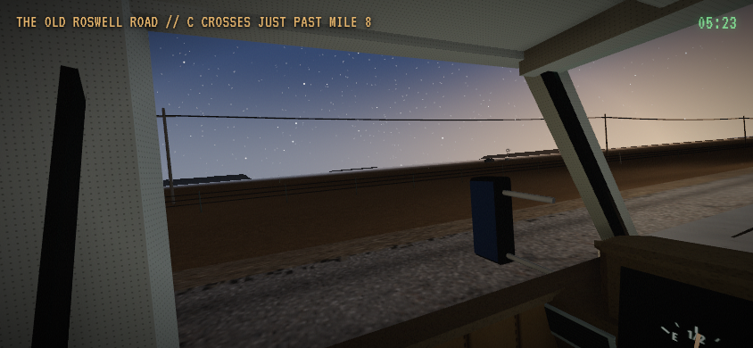
fixture_200m_picture_off_repeatability_b | mi 3.0758 | PLASSERT FIXTUR picture_off_repeatability | 05:23:20.0 | map XYZ [4412.0,10.7,-146.1] | ultra/offfixture_80m_player_default_a | mi 3.1504 | PLASSERT FIXTUR player_default | 05:23:20.0 | map XYZ [4521.6,9.6,-195.1] | ultra/vhs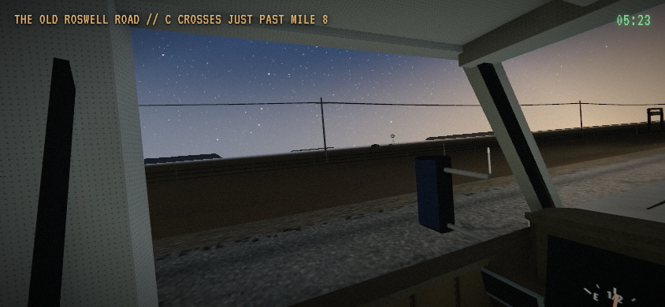
fixture_80m_player_default_b | mi 3.1504 | PLASSERT FIXTUR player_default | 05:23:20.0 | map XYZ [4521.6,9.6,-195.1] | ultra/vhsfixture_80m_picture_off_repeatability_a | mi 3.1504 | PLASSERT FIXTUR picture_off_repeatability | 05:23:20.0 | map XYZ [4521.6,9.6,-195.1] | ultra/off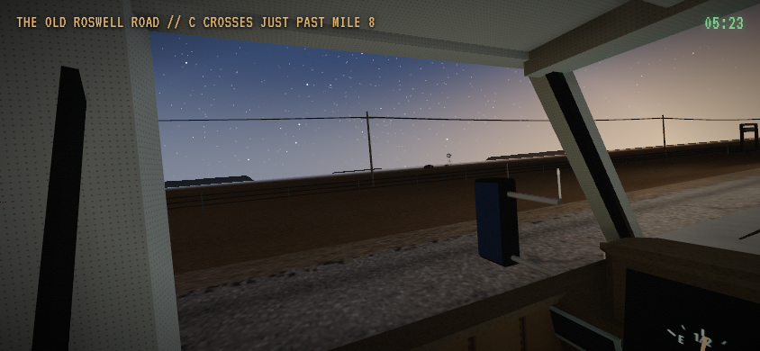
fixture_80m_picture_off_repeatability_b | mi 3.1504 | PLASSERT FIXTUR picture_off_repeatability | 05:23:20.0 | map XYZ [4521.6,9.6,-195.1] | ultra/off